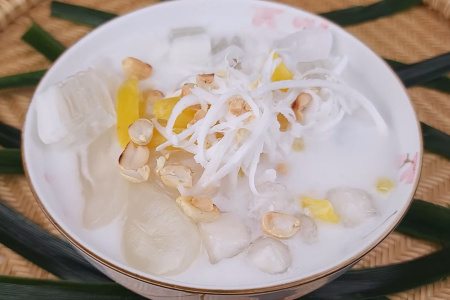
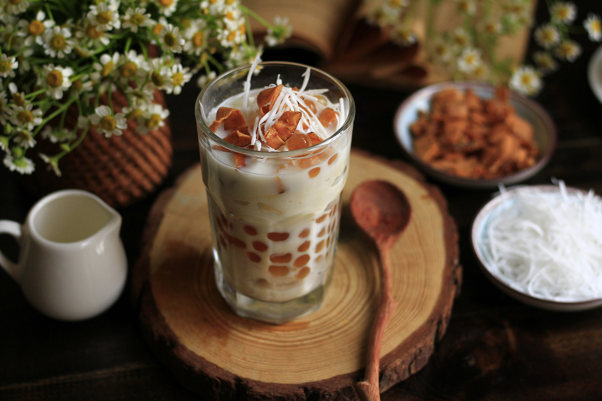
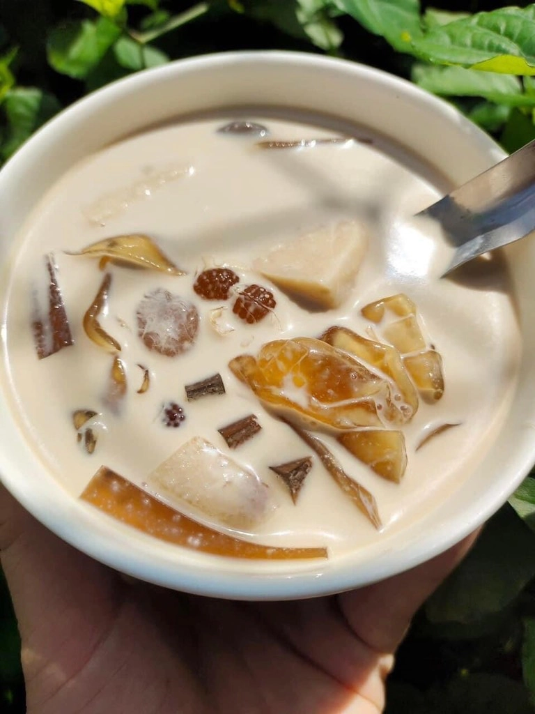

Chè Dừa Dầm là món tráng miệng thanh mát, giải nhiệt cực đã, đặc biệt
phổ biến trong những ngày hè nóng bức. Món chè này gây ấn tượng bởi sự
kết hợp hài hòa giữa vị béo ngậy của nước cốt dừa, độ dai sần sật của
cơm dừa non và thạch dừa, cùng với vị ngọt thanh mát, tạo nên một trải
nghiệm ẩm thực độc đáo và hấp dẫn.



Nguyên liệu
Cơm dừa non: 200g (chọn cơm dừa non, mềm, có độ dai
vừa phải, cắt sợi hoặc hạt lựu)
Thạch dừa: 100g (thạch dừa đóng gói sẵn hoặc tự làm,
cắt nhỏ miếng vừa ăn)
Nước cốt dừa: 150ml (chọn loại cốt dừa tươi hoặc đóng
hộp nguyên chất để có độ béo và thơm ngon nhất)
Sữa đặc: 100g (điều chỉnh lượng tùy theo khẩu vị ngọt
của bạn)
Đường: 50g (đường cát trắng, tùy chỉnh theo khẩu vị,
dùng để pha nước cốt và làm nước đường)
Đá bào: 200g hoặc đủ dùng (đá bào mịn sẽ giúp chè mát
lạnh nhanh và hòa quyện hơn)
Dừa khô hoặc dừa sợi: Một ít để trang trí (tùy chọn,
tăng thêm hương vị và vẻ đẹp)
Lá dứa (lá nếp): 1-2 lá (tùy chọn, để tạo mùi thơm
cho nước cốt dừa)
Cách làm
Bước 1: Sơ chế nguyên liệu
Cơm dừa non: Rửa sạch cơm dừa non, để ráo, sau đó
dùng dao thái thành sợi mỏng hoặc cắt hạt lựu tùy thích.
Thạch dừa: Rửa sạch thạch dừa dưới vòi nước chảy
để loại bỏ bớt nước đường bảo quản, sau đó cắt thành miếng nhỏ vừa
ăn.
Lá dứa (nếu dùng): Rửa sạch, buộc gọn lại.
Bước 2: Pha nước cốt dừa
Trong một nồi nhỏ, cho 150ml nước cốt dừa, 100g sữa đặc và 50g
đường vào.
Nếu dùng lá dứa, cho lá dứa vào nồi cùng hỗn hợp nước cốt dừa.
Đun hỗn hợp trên lửa nhỏ, khuấy đều cho đường tan hoàn toàn. Khi
hỗn hợp vừa sôi lăn tăn (không đun sôi bùng) thì tắt bếp. Việc này
giúp nước cốt dừa thơm hơn và không bị tách dầu.
Để hỗn hợp nước cốt dừa nguội hoàn toàn. Sau đó, có thể cho vào tủ
lạnh để làm mát.
Bước 3: Trình bày và hoàn thiện
Lấy ly hoặc bát thủy tinh. Cho một lớp cơm dừa non đã thái sợi
hoặc hạt lựu vào đáy ly.
Tiếp theo, cho một lớp thạch dừa đã cắt nhỏ lên trên.
Thêm đá bào vào ly, lượng đá tùy theo sở thích của bạn (có thể cho
đầy ly hoặc một nửa).
Từ từ đổ hỗn hợp nước cốt dừa đã nguội và làm mát lên trên đá bào
và các nguyên liệu khác.
Bước 4: Trang trí và thưởng thức
Rắc một chút dừa khô hoặc dừa sợi lên trên bề mặt ly để trang trí
và tăng thêm hương vị dừa.
Khi thưởng thức, dùng muỗng khuấy đều các thành phần trong ly để
hương vị hòa quyện vào nhau.
Chè Dừa Dầm ngon nhất khi được dùng lạnh.
Mẹo nhỏ để Chè Dừa Dầm ngon hơn:
Chọn cơm dừa non: Cơm dừa non là yếu tố quan trọng
tạo nên độ dai sần sật đặc trưng. Chọn loại dừa có cơm dày, trắng và
mềm.
Nước cốt dừa: Sử dụng nước cốt dừa tươi hoặc loại
đóng hộp chất lượng cao sẽ giúp chè có hương vị béo ngậy và thơm
ngon tự nhiên.
Độ ngọt: Điều chỉnh lượng đường và sữa đặc theo
khẩu vị cá nhân. Bạn có thể nếm thử hỗn hợp nước cốt dừa trước khi
làm lạnh để đảm bảo độ ngọt vừa ý.
Thạch dừa: Có thể tự làm thạch dừa hoặc mua sẵn.
Nếu tự làm, bạn có thể thêm hương vị dừa vào thạch để tăng cường mùi
thơm.
Đá bào: Đá bào mịn sẽ giúp chè mát lạnh nhanh chóng
và hòa quyện tốt hơn với các nguyên liệu khác.
Làm lạnh: Chè Dừa Dầm ngon nhất khi được làm lạnh
hoàn toàn. Bạn có thể làm lạnh riêng phần nước cốt dừa và các
topping trước khi lắp ráp.
Sáng tạo topping: Ngoài cơm dừa và thạch dừa, bạn
có thể thêm các loại topping khác như trân châu trắng, hạt é, sương
sáo, hoặc các loại trái cây tươi yêu thích để món chè thêm phong
phú.
Bình luận và Đánh giá
Đánh giá của bạn
Chưa có bình luận nào.